Exercicis de tot el tema, amb els resultats
En la BD factura, connectant com a usuari factura:
6.1 Traure tota la informació dels pobles (anomeneu-la Ex_6_1.sql).
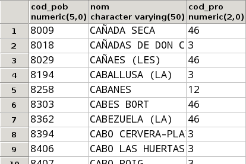
Un total de 1663 files
6.2 Traure el codi postal, el nom i l'adreça, per aquest ordre, de tots els venedors (anomeneu-la Ex_6_2.sql).
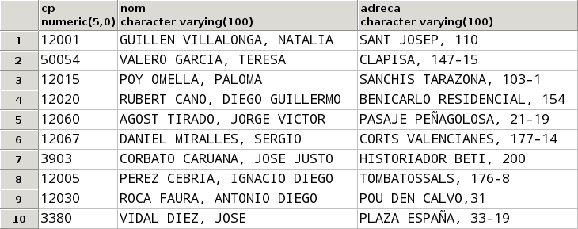
6.3 Traure el codi d'article, la descripció, preu i preu incrementat en un 5%, de tots els articles.
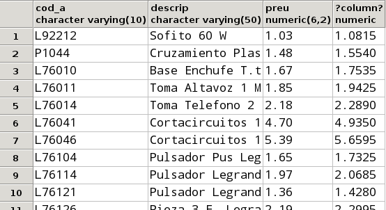
Un total de 812 files
6.4 Traure la informació dels clients amb el següent format (ha d'anar tot en una columna):
Damborenea Corbato, Alicia. CALLE MADRID, 83 (12425)
Fixeu-vos que està tot en una columna, i per tant haureu de concatenar de la forma adequada. Fixeu-vos també que en en el nom només les inicials estan en majúscules
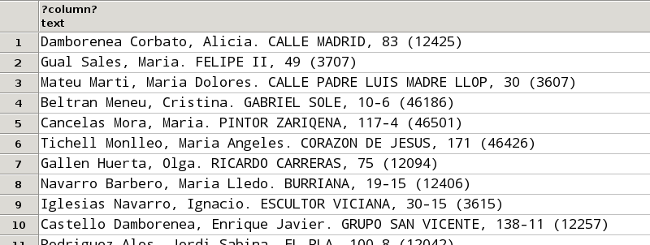
Un total de 49 files
6.5 Traure el num_f, data i cod_ven de les factures amb les següents capçaleres respectivament: Número Factura, data i Codi Venedor (anomeneu-lo Ex_6_5)
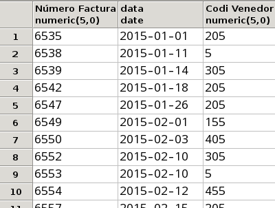
Un total de 105 files
6.6 Donar àlias als camps que ho necessiten de la taula ARTICLE (anomeneu-lo Ex_6_6)
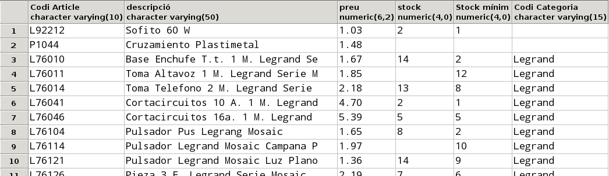
Un total de 812 files
6.7 Traure els clients de la ciutat amb codi 12309.
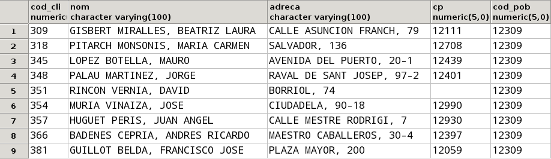
6.8 Traure totes les factures del mes de març de 2015.
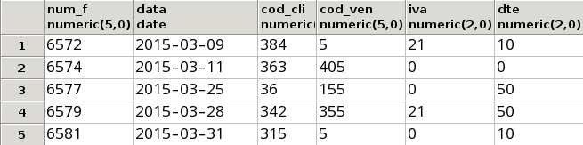
6.9 Traure tots els articles de la categoria BjcOlimpia amb un stock entre 2 i 7 unitats.
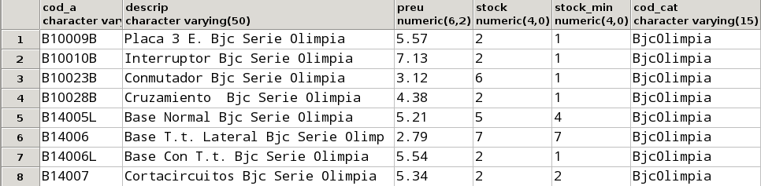
6.10 Traure tots els clients que no tenen introduït el codi postal.
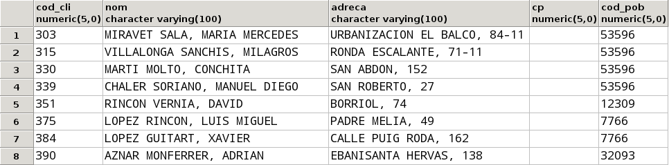
6.11 Traure tots els articles amb el stock introduït però que no tenen introduït el stock mínim.
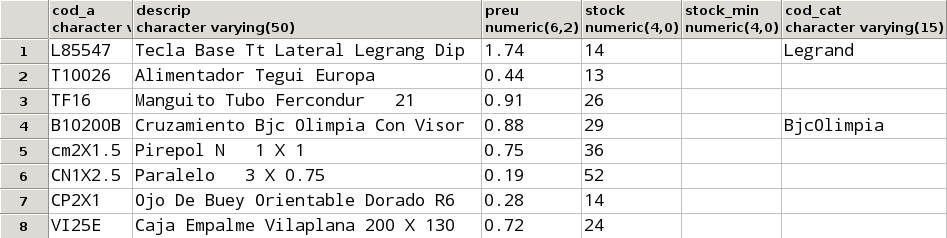
6.12 Traure tots els clients, el primer cognom dels quals és VILLALONGA.
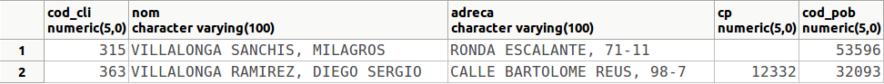
6.13.a Modificar l'anterior per a traure tots els que són VILLALONGA de primer o de segon cognom.
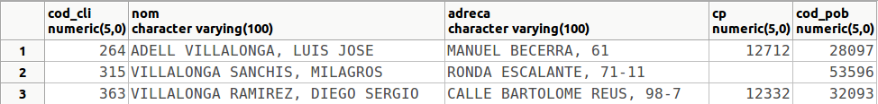
6.13.b Modificar l'anterior per a traure tots els que no són VILLALONGA ni de primer ni de segon cognom.
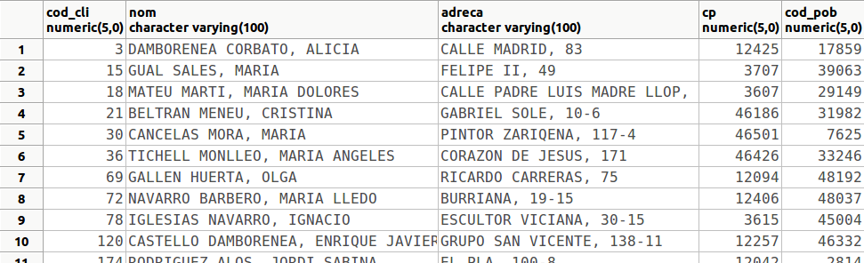
Un total de 46 files
6.14 Traure els articles "Pulsador" (la descripció conté aquesta paraula), el preu dels quals oscila entre 2 i 4 € i dels quals tenim un stock estrictament major que el stock mínim.
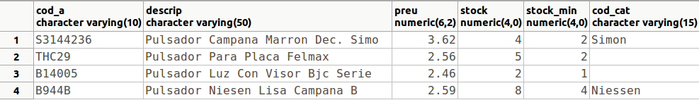
6.15 Comptar el nombre de clients que tenen el codi postal nul.
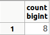
6.16 Comptar el número de vegades que l'article L76104 entra en les línies de factura, i el número total d'unitats venudes d'aquest article. Només us fa falta la taula LINIA_FAC.
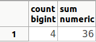
6.17 Traure la mitjana del stock dels articles.
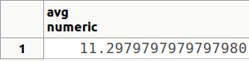
6.18 Modificar l'anterior per a tenir en compte els valors nuls, com si foren 0. Us vindrà bé la funció COALESCE que converteix els nuls del primer paràmetre al valor donat com a segon paràmetre (si és diferent de nul, deixa igual el valor). Per tant l'heu d'utilitzar d'aquesta manera: COALESCE(stock,0)
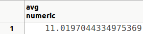
6.19 Comptar quantes factures té el client 375
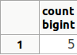
6.20 Calcular el descompte màxim, el mínim i el descompte mitjà de les factures.
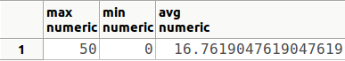
6.21 Comptar el número de pobles de cada província (és suficient traure el codi de la província i el número de pobles).
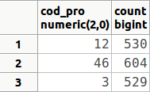
6.22 Comptar el nombre de clients en cada poble i codi postal.
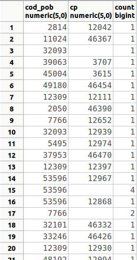
Un total de 45 files
6.23 Comptar el número de factures de cada venedor a cada client.
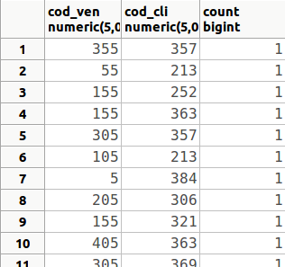
Un total de 96 files
D'aquestes 96 files, relativament poque tenen un valor diferent de 1 en el número de factures: la fila 29 (455, 30, 2) o la fila 34 (5, 342, 3)
6.24 Comptar el número de factures de cada trimestre. Per a poder traure el trimestre i agrupar per ell (ens val el número de trimestre, que va del 1 al 4), podem utilitzar la funció TO_CHAR(data,'Q').
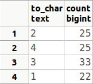
No apareix ordenat, i vol dir que en el trimestre 2 hi ha 25 factures, en el trimestre 4 hi ha 35, en el trimestre 3 hi ha 33 i en el trimestre 1 hi ha 22
6.25 Calcular quantes vegades s'ha venut un article, la suma d'unitats venudes, la quantitat màxima i la quantitat mínima.
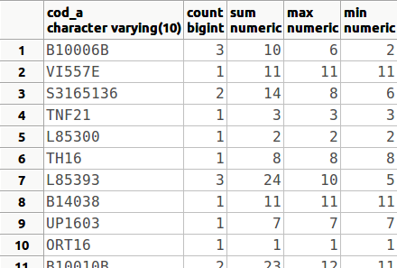
Un total de 399 files
6.26 Comptar el número d'articles de cada categoria i el preu mitjà.
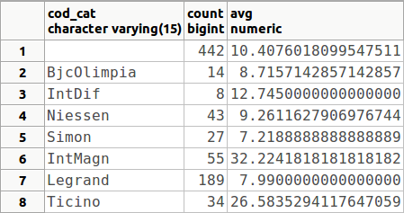
6.27 Calcular el total de cada factura, sense aplicar descomptes ni IVA. Només ens farà falta la taula LINIES_FAC, i consistirà en agrupar per cada num_f per a calcular la suma del preu multiplicat per la quantitat.

Un total de 105 files
6.28 Calcular la mitjana de quantitats demanades d'aquells articles que s'han demanat més de dues vegades. Observeu que la taula que ens fa falta és LINIA_FAC, i que la condició (en el HAVING) és sobre el número de vegades que entra l'article en una linia de factura, però el resultat que s'ha de mostrar és la mitjana de la quantitat.
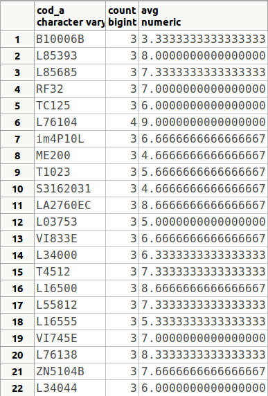
6.29 Traure els pobles que tenen entre 3 i 7 clients. Traure només el codi del poble i aquest número
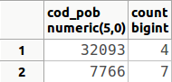
6.30 Traure les categories que tenen més d'un article "car" (de més de 100 €). Observeu que també ens eixirà la categoria NULL, és a dir, apareixerà com una categoria aquells articles que no estan catalogats.
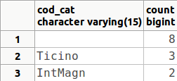
6.31 Traure els clients que tenen més d'una factura, amb el número de factures.
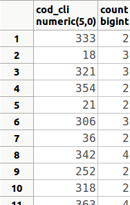
Un total de 33 files
6.32 Modificar l'anterior per a traure els clients que tenen més d'una factura en el primer trimestre.
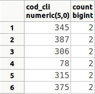
6.33 Calcular el total de cada factura d'aquelles factures que tenen 10 o més línies de factura, sense aplicar descomptes ni IVA (com la consulta 6.26), i també aplicant el descompte que consta en la línia de factura (no el descompte de tota la factura). Tindrem el problema que el valor NULL és especial, i en operar amb qualsevol altre valor donarà NULL. En aquest cas clarament l'hem de considerar com un descompte 0. Podeu utilitzar una funció que substitueix els valors nuls trobats en el primer paràmetre, pel segon paràmetre d'aquesta manera: COALESCE(dte,0)
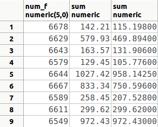
6.34 Traure tots els clients ordenats per codi de població, i dins d'aquestos per codi postal.
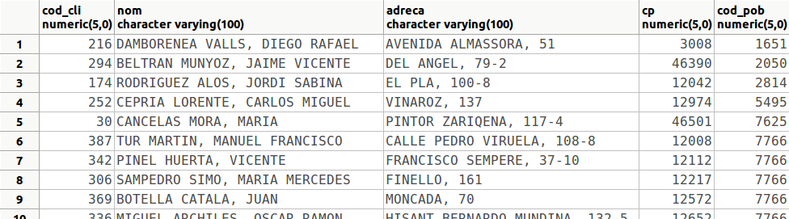
Un total de 49 files
6.35 Traure tots els articles ordenats per la categoria, dins d'aquest pel stock, i dins d'aquest per preu (de forma descendent)
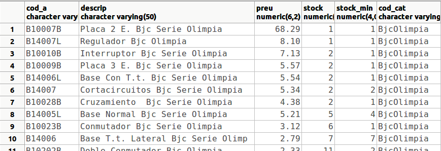
Un total de 812 files
6.36 Traure els resultats de la consulta 6.33 ordenats pel total de la factura quan ja s'ha aplicat el descompte, de forma descendent.
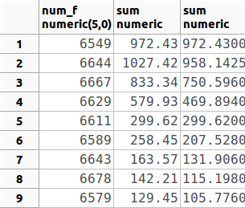
6.37 Traure tots els articles ordenats per la diferència entre el stock i el stock mínim de forma descendent. Com que en moltes ocasions el stock o el stock mínim és nul, hem de considerar en aquestos casos com 0. Per tant hem de tornar a utilitzar la funció COALESCE(stock,0) (i també per al stock mínim).
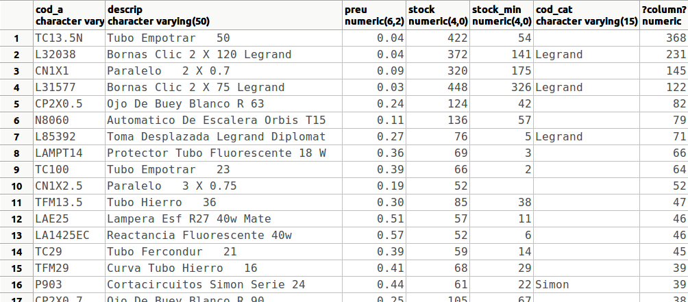
Un total de 812 files
6.38 Traure els codis de venedor amb el número de factures venudes en el segon semestre de 2015, ordenades per aquest número de forma descendent
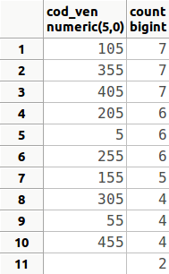
6.39 Traure els venedors que han venut alguna cosa el mes de gener de 2015.
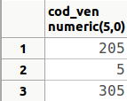
6.40 Traure els diferents tipus d'IVA que s'han aplicat a les factures de cada venedor, també durant el mes de gener de 2015
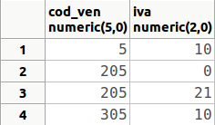
6.41 Traure els diferents caps de venedors (eviteu que aparega el valor nul)
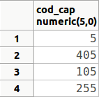
6.42 Traure els diferents descomptes que s'han aplicat als articles, el codi dels quals comença per SAT. Traure tant el codi d'article com el descompte.
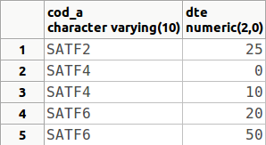
6.43 Comptar en quantes poblacions tenim clients
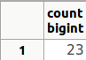
6.44 Traure tota la informació dels dos articles més cars.

6.45 Traure el codi de les tres ciutats amb més clients
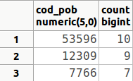
6.46 Traure el venedor que ha venut menys factures
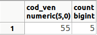
6.47 Traure les tres factures més cares (sense comptar els descomptes)
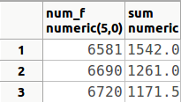
6.48 Modificar l'anterior per a traure totes les factures, excepte les 3 més cares.
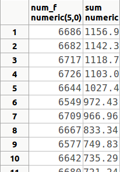
Un total de 102 files
6.49 Crear una taula anomenada ARTICLE_999x, on 999 han de ser les 3 últimes xifres del DNI, i x la lletra del teu NIF, que siga una còpia de la taula ARTICLE, però substituint els valors nuls de stock i stock_min per zeros.
El resultat ha de ser la creació de la taula. Si consulteu el seu contingut ha de ser el següent:
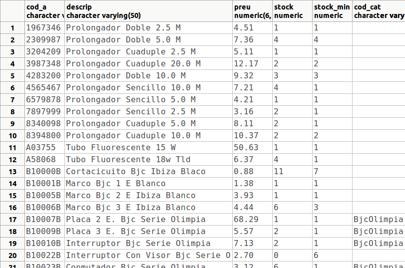
Untotal de 812 files
6.50 Utilitzar la taula anterior per a traure el stock màxim, el mínim i la mitjana de stocks. Observeu que si utilitzàrem la taula ARTICLE, els resultats no serien els mateixos (excepte el màxim), sobretot la mitjana, ja que els valors nuls no entrarien en els càlculs d'aquesta mitjana.
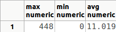
Llicenciat sota la Llicència Creative Commons Reconeixement NoComercial CompartirIgual 3.0